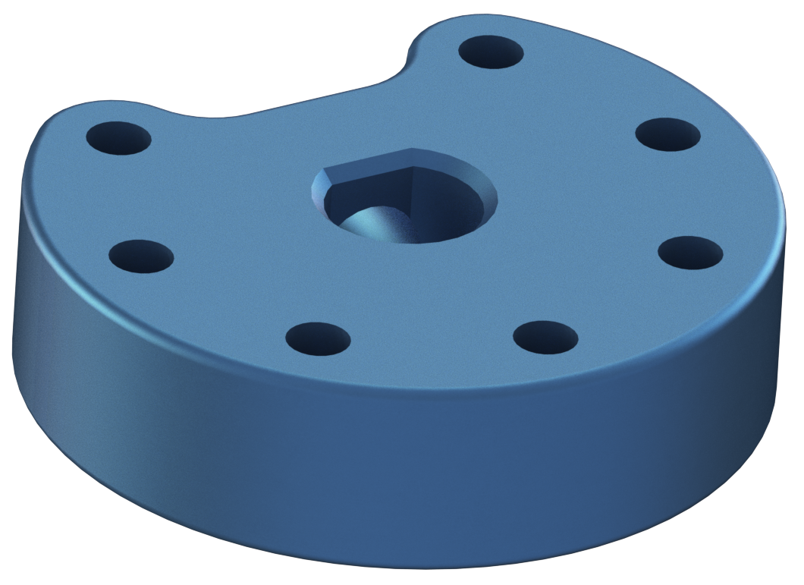
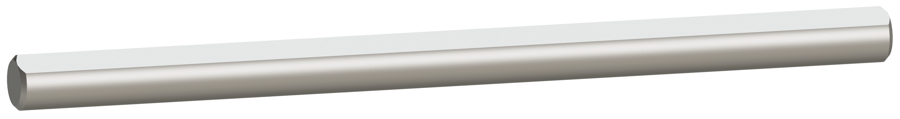
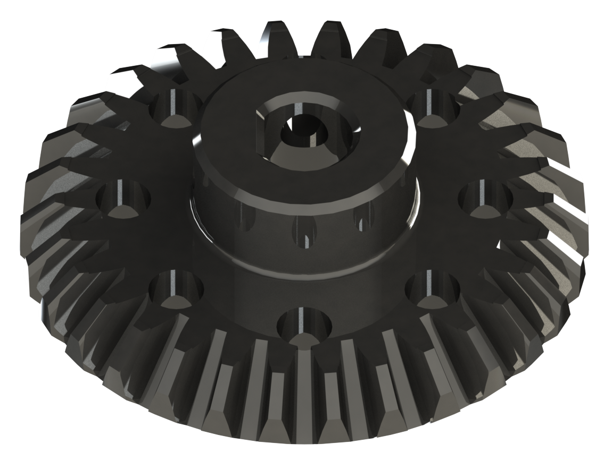
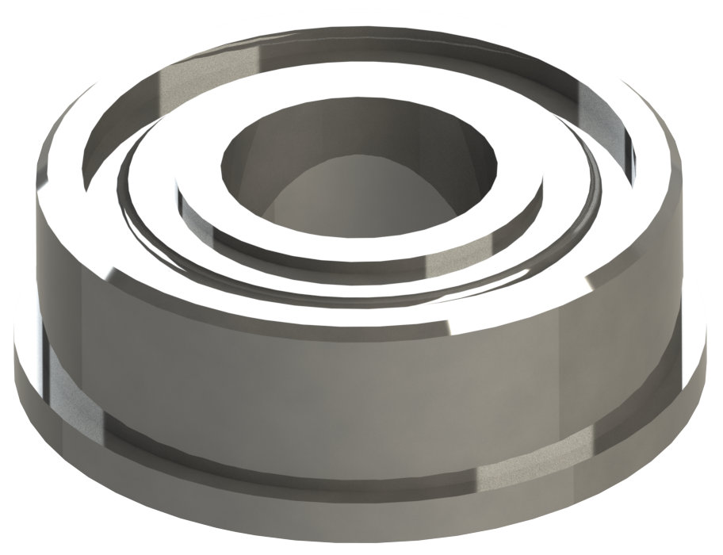
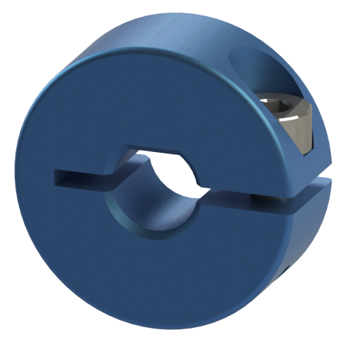
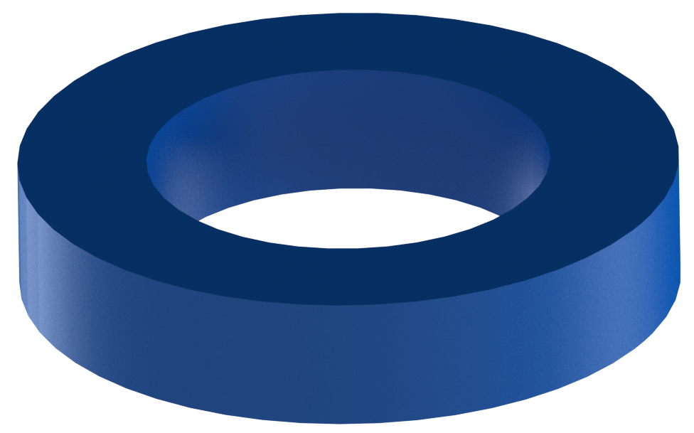

Step 3 - Drive Axle
Name |
Part # |
Qty |
Image |
|---|---|---|---|
Completed Assembly from Part 3 |
1 |
||
Light Weight Shaft Hub |
76282 |
2 |
 |
6mm x 96mm D-Shaft |
76161 |
2 |
 |
30 Tooth Bevel Gear |
76219 |
2 |
 |
14mm Flange Bearing |
76302 |
4 |
 |
Collar Clamp |
76320 |
2 |
 |
2mm Shaft Spacer |
76306 |
8 |
 |
{kind=link}
{kind=link}
{kind=link}
{kind=link}
{kind=link}
{kind=link}
Instructions
Pre-load the 5mm setscrew into the Light Weight Shaft Hub. Be careful not to tighten the setscrew all the way
Pre-Load the 4mm setscrews into the 30 Tooth Bevel Gear. Be careful not to tighten the setscrews all the way
Pre-load the M3 x 8mm SHCS into the Collar Clamp. Be careful not to righten the screw
Slide the Collar Clamp onto the 6mm D-shaft and offset it about 2mm away from the edge of the shaft. Using a 2mm spacer is an excellent way to get the spacing
Clamp the Collar clamp down to the D-shaft.
Slide a single 2mm spacer onto the D-shaft and slide it down to the collar clamp.
Slide a 14mm bearing down the D-shaft until it makes contact with the spacer. The flange should be touching the spacer.
Slide the D-shaft through the End Piece Plate from inside the frame.
Before sliding the shaft through, slide the 30 Tooth Bevel Gear onto the shaft with the setscrew side facing the inside of the frame. Do not tighten the setscrews
Fully slide the D-Shaft through.
Slide a 14mm bearing onto the D-shaft with the flange facing the outside.
Slide 3 x 2mm spacers onto the D-shaft.
Slide the Light Weight shaft hub onto the D-shaft and tighten the setscrew.
The shaft should be able to spin freely. If there are any issues, loosen the Light Weight Shaft hub or the collar clamp and adjust.
Repeat these steps for the other side.
{kind=link}
{kind=link}